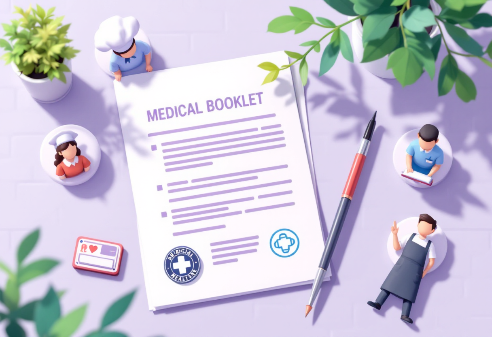
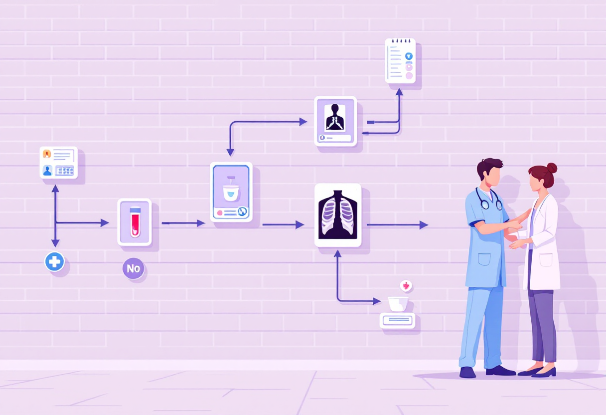

Медична книжка
Де оформити, що входить у медогляд, терміни та нюанси — коротко і по кроках.

Що таке медична книжка і кому вона потрібна
Особова медична книжка — офіційний документ про стан здоров'я. Потрібна для роботи в сферах, де є контакт з людьми або продуктами.
- Обов'язкова для: кухарів, офіціантів, продавців, медпрацівників, вихователів.
- Підтверджує, що людина пройшла медогляд і здала аналізи.
- Зберігається у роботодавця або в самого працівника.
Де оформити медичну книжку
Книжку оформлюють у санепідемстанції (ЦГЗ) або уповноваженій медичній установі.
- Знайди найближчий Центр громадського здоров'я або приватну клініку з ліцензією.
- Принеси: паспорт або ID, ІПН, 1 фото 3×4.
- Бланк книжки купується на місці або приноситься самостійно.
- Процедура займає 1–5 днів залежно від необхідних аналізів.

Що входить у медогляд
Перелік лікарів і аналізів залежить від типу роботи. Базовий набір такий:
- Терапевт — загальний огляд і підпис.
- Флюорографія — знімок легень (дійсна 1 рік).
- Аналізи крові та сечі.
- Аналіз на кишкові інфекції (для харчових виробництв).
- Дерматолог — для окремих спеціальностей.
Терміни дії та переоформлення
Медична книжка не безстрокова — її потрібно регулярно оновлювати.
- Щороку — флюорографія та основні аналізи.
- Раз на 1–2 роки — повторний медогляд за категорією роботи.
- При зміні роботодавця — книжка залишається у власника, переоформлювати не потрібно.
- Термін дії позначений у самій книжці поруч із кожним записом.